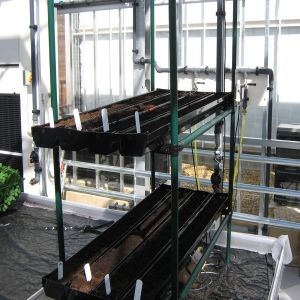
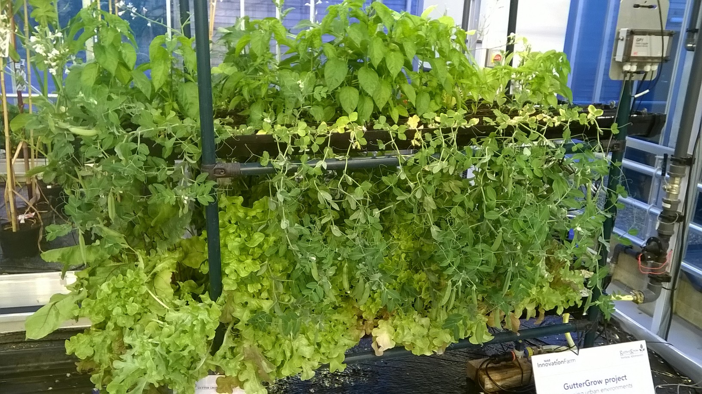
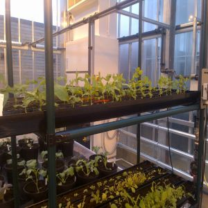

GutterGrow for Schools / Colleges
Building Vertical Growing Systems for Educational Purposes
GutterGrow is a simple constructional method of building vertical growing systems for demonstration and educational purposes. It consists of joints and tubes which can be built into robust 3D frames which hold gutters and/or many other types of plant container. Irrigation tubing, sensors and actuators, LED lighting, loggers and other plant growing and monitoring equipment can be attached on or through the tubular frame. GutterGrow's form factor can be adjusted to faciltate control of the growing environment and attachment of plant protection against pests and disease

The attractive features of GutterGrow for demonstration and educational use are :
- Frames comprise of tubes and joints which are easily constructed to fit most available spaces
- Frames can be adjusted to meet students requirements (e.g. height, accessibility)
- Frames can be easily moved or dismantled and stored (wheels can be fitted if required)
- Frames are robust and reconfigurable providing long usable life
- All types of growing containers (e.g. pots, troughs, gutters) can be supported (gutters supplied in kits)
- Most plants, flowers and vegetables can be grown
- Plants can be removed for students to take home during holidays
- Plant protection easily attached to protect against pests and disease
- Rapid germination and ten week growing cycles encouraged by system
- Essential plant growing services (e.g. watering, feeding) can be automated and attached
- A wide range of sensors and monitoring equipment can be attached
- Rich data capture possible for use in project work
- A range of funding options can be considered to cover the cost of providing this vertical growing system to schools. Prepacked GutterGrow kits are available from EcoStyle
- Further details are available from mike@sustainable-opportunities.com